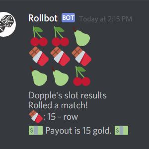
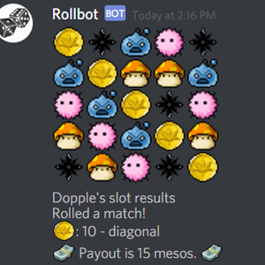
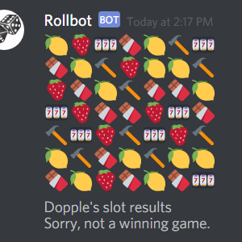

Tools: Python 3.0+, Dynamodb, Discord.py
Discord is an online group chat application, similar to Slack. Discord.py is a Python wrapper for their bot API.
My friend and I thought it would be fun to program a bot with a suite of luck-based games. The arrangement was mutually beneficial: I got him started on Git, he helped me with Discord.py basics, and then I could swipe a copy of his repository and shovel stuff into it. (Later, he got into a group project, to which I said, "That's great, you can use your newfound Git skills!" He said, "Yeah, my Git 'skills'.")
FEAR: Rollbot on GitHub
Rollbot Features
Slots
A slot machine that renders symbols as emotes. It comes in a few flavours: 3x3, 5x5, 7x7, and umm, MapleStory.
3x3 Slots
5x5 MapleStory Theme
"Giantslots"
I put a lot of gory, gory work into biasing the win rate to be high. I also spent some time running simulations to balance the payouts of the various modes, so that there was no practical advantage, for example, to play 7x7 over 5x5.
Scratch Card
A simple luck-based game that parses 2D coordinates. Match three of the same tiles to win.
I can attribute a few days of work to troublemaking friends, who went straight to breaking my input handler. "It's a duty," they say. "Never trust the user," they say.
They got me the first time (by inputting ",,,,,," because they knew I used split for multiple options). The next time, I had my revenge. They're all dead now. Just kidding, I patched the input.
Hammerpot
A type of scratch card, which is really just Final Fantasy XIV's Cactpot. The card generates unique numbers 1-9 and payouts for the sum of each column/row/diagonal in the grid. You reveal some tiles, then do some mild sudoku to narrow down the highest paying line of numbers.
My line was 5 + 3 + 8 = 16, which matched the chart's payout of 15. For the sake of display size, I've listed only the possible sums for the given card, whereas Cactpot shows every sum of every card.
Box drawing with dynamic content was some hardball Etch-a-Sketch™. The plus side is that I can generate grids of almost any size now.
Bombtile
A game where you /flip tiles on a grid. If you reveal the <!> bomb, you lose! Players win money based on the multipliers revealed across the game. For example, if you reveal a 2x multiplier tile and then hit the bomb, then everybody else wins 2x the wager from you. Or if you reveal a 3x multipler and somebody else loses, you win 3x the gold from them.
You can even add AI players to the game if nobody wants to play with you :-(.
Blackjack
I recreated Blackjack as a multiplayer game.
This time, troublemaking friends couldn't make any sort of illegal move, or hijack other people's turns, or create games while games were already running. They tried.
Butts
The most used command of Rollbot commands, all this does is print out a random number of peach emotes from 1-20.
Persistence
Simple statistics are stored and updated using Amazon's DynamoDB. With the commands /gold, /losses, and /winnings, we can query statistics such as total gold, as well as how much gold was won from and lost to other players.
Misc
What's with the hammer motif?
One of my friends would send me hammer (and spaghetti) emotes whenever he came upon my many mishaps. I took his teasing and ran with it.
Special thanks
I would like to thank the following people:- Therealtahu, for breaking my inputs and making mean comments about my code
- Arcane, also for breaking my inputs and making mean comments about my code
- Hovsep, for starting Rollbot and pondering with me on object-oriented design
- Tich Showers, for answering my Python questions
- And all my other Discord friends for their support and love for the /butts command